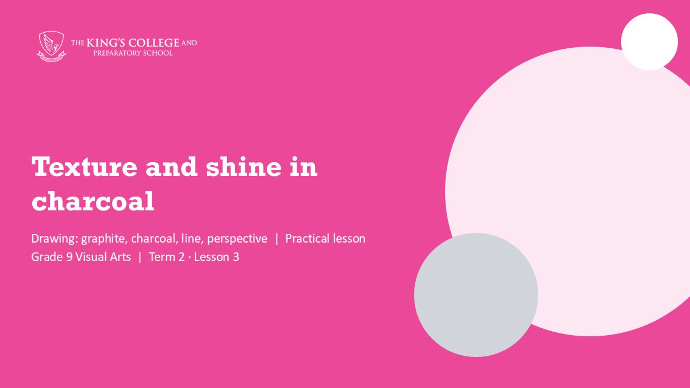

Term 2 · Lesson 3 · Practical lesson
Texture and shine in charcoal
Start here
Today I will
- Plan a balanced composition of a shiny and a textured object
- Draw sharp highlights and reflections with hard and soft edges
- Show texture with charcoal marks
Look at the flask. Can you see the window, the lamp or even yourself in it? How would you draw that?
Words to know
- Reflective surface
- A smooth surface such as metal or glass that shows reflections of its surroundings.
- Shine
- A small, bright, sharp highlight on a glossy surface.
- Hard edge
- A sharp, clear border between two values.
- Soft edge
- A gradual, blurry change from one value to another.
- Texture
- How a surface feels, or looks as if it would feel.
Slides

Notes
Rendering a reflective (shiny) object next to a textured object: sharp highlights, reflections, hard and soft edges.
Shine versus texture
| Shiny (reflective) | Textured |
|---|---|
| Very dark darks right next to bright whites | Many small mid-tones and gentle highlights |
| Hard edges around reflections | Soft, broken edges |
| Shapes of the surroundings, curved and distorted | Repeated marks that follow the surface |
| Smooth blending inside each shape | Directional marks: dots, hatching, short strokes |
Setting up the composition
- Arrange: Overlap the two objects slightly for depth and balance.
- Thumbnail: Make two small sketches; choose the better one.
- Plan light: Draw the big shapes with vine charcoal, filling about two-thirds of the A3 page.
- General to detail: Big value shapes first, details and highlights last.
Shine is contrast and sharp edges; texture is many small marks.
Practical
You need: A3 cartridge paper, vine and compressed charcoal, charcoal pencil, putty eraser, objects and lamp
Start the texture-and-shine composition
- Make two thumbnail sketches of your arrangement and choose one.
- Draw the two objects lightly in vine charcoal on the A3 page.
- Map the big reflection shapes on the shiny object as flat value shapes.
- Block in the darkest areas and lift out the main highlights.
- Start the texture with marks that follow the surface of the textured object.
- Photograph your setup (or sketch the lamp position) so you can match it next lesson.
Theory cycle test (Friday): art history timeline, vocabulary and visual analysis.
Test yourself
- Why does a shiny object have such strong contrast?
- What is the difference between a hard and a soft edge?
- How do you show texture in charcoal?
Show answers
1. It reflects light sharply, so bright highlights sit right next to dark reflections. 2. A hard edge is a sharp change in value; a soft edge is a gradual change. 3. With repeated marks (dots, short strokes, hatching) that follow the surface, and softer highlights.
Finished early?
Practise the difference between shine and texture side by side.
- Draw two small circles next to each other in your VJ.
- Make the first one look like a shiny metal ball: very dark darks beside bright whites and hard edges.
- Make the second look like a textured ball (like a tennis ball or an orange): many small marks and soft edges.
- Write one sentence explaining the main difference.